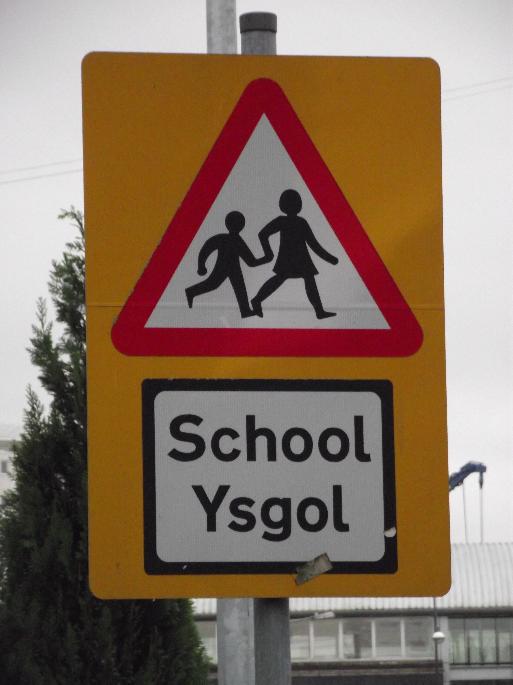

The Syntactic Atlas of Welsh Dialects aims to establish the extent of variation in the syntax of present-day Welsh, including age-related variation and variation due to linguistic background, as well as geographical variation. Specifically, its aims are:
- to establish the distribution of major syntactic variants in Welsh using a systematic methodology
- to establish patterns of change via age-related variation
- to examine the effects of language revitalization on the syntax of Welsh
- to provide material for further analysis of Welsh syntax in any framework
- to provide a repository of material available for researchers and the general public interested in any kind of variation within the Welsh language as spoken today
A one-year project to gather data for the atlas was funded by the British Academy.
SAWD is part of the Edisyn and REEDS networks of dialect syntax projects.